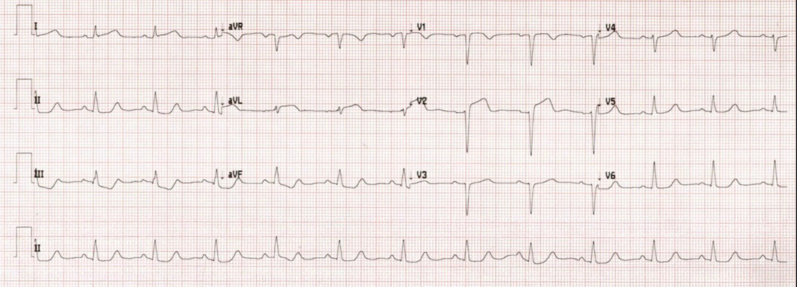
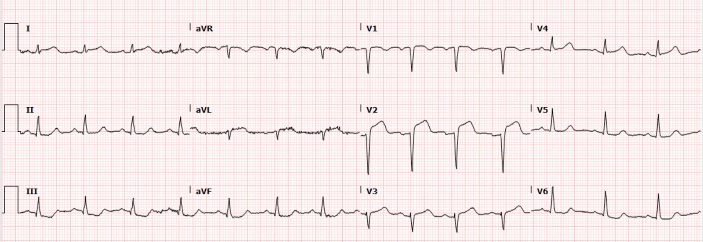
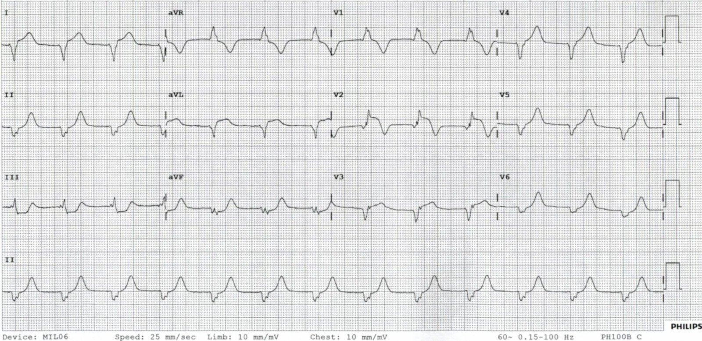
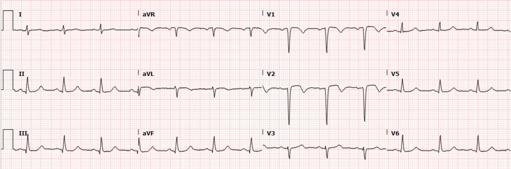
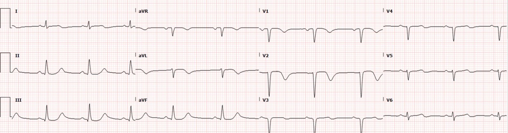
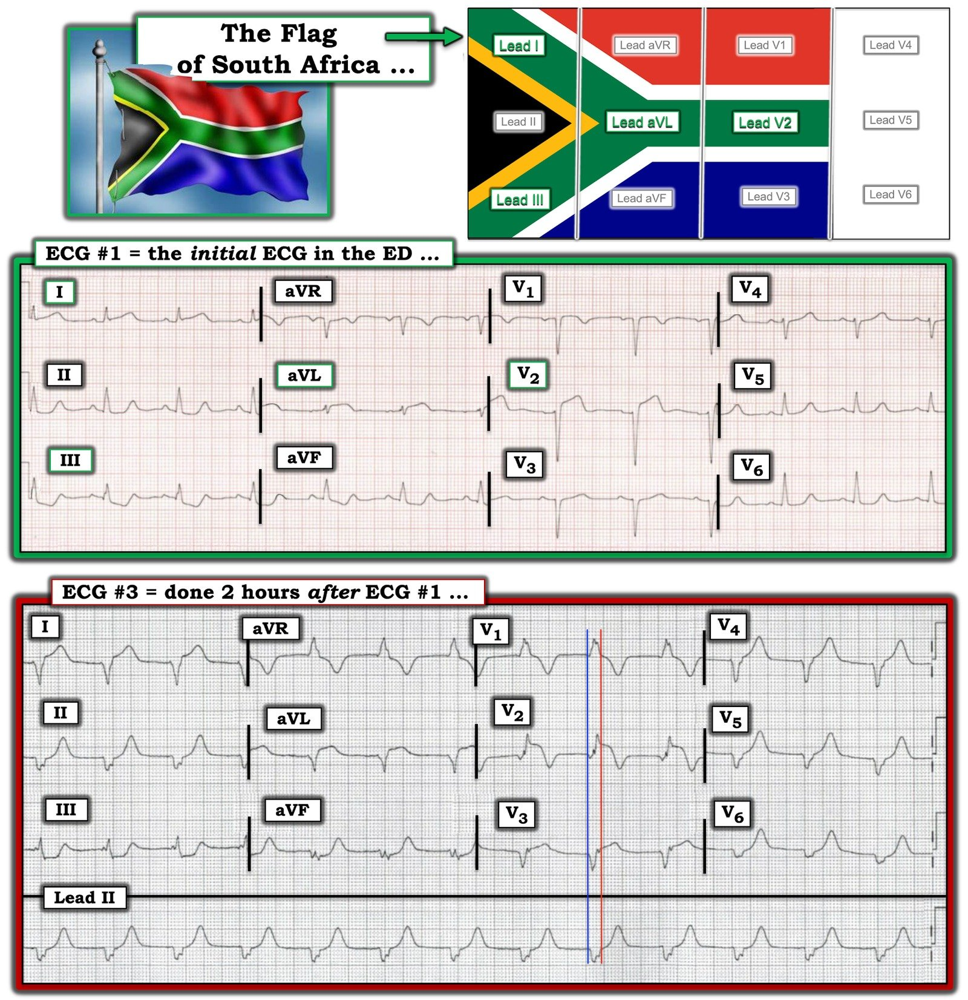
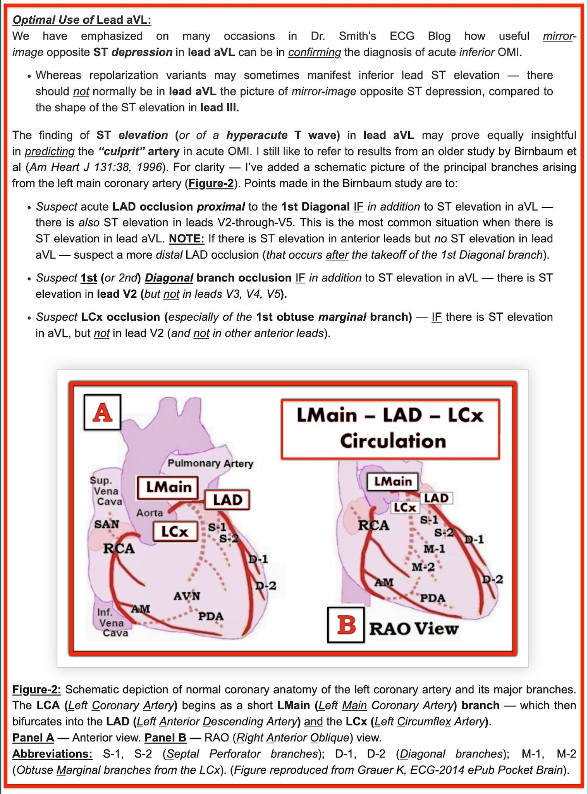

08/04/2022 — Một phụ nữ 30 mấy tuổi đột ngột đau ngực, buồn nôn và vã mồ hôi. Xử trí của bác sĩ tim mạch có phù hợp không?
Bản dịch tiếng Việt của bài "A woman in her 30s with sudden chest pain, nausea, and diaphoresis. Was her cardiology management appropriate?" – Dr. Smith’s ECG Blog. Giữ nguyên toàn bộ 7 hình ảnh của bản gốc.
Ca bệnh do Brandon Fetterolf MD viết và gửi, Meyers biên tập.
= = =
Một phụ nữ đầu tuổi 30, mắc nhiều bệnh tự miễn trong đó có viêm mạch, đến viện vì khó chịu ở ngực giữa-trái kéo dài 2-3 giờ, lan lên cổ và cánh tay trái, kèm buồn nôn, vã mồ hôi và chóng mặt.
= = =
Điện tâm đồ ban đầu: Lúc nhập viện, 1554 (không có điện tâm đồ cũ để so sánh):


= = =
Bạn nghĩ điều gì đang xảy ra với người phụ nữ 30 mấy tuổi này?
= = =
Điện tâm đồ cho thấy nhịp xoang bình thường (NSR) với QRS bình thường, ngoại trừ tăng tiến sóng R kém (PRWP) và sóng QS bệnh lý ở V2-3. Có ST chênh lên (STE) và sóng T tối cấp ở V2, I và aVL, kèm ST chênh xuống (STD) soi gương ở II, III và aVF.
Đây là hình ảnh Cờ Nam Phi (South African Flag Pattern).
Ngoài ra còn có ấn tượng STE nhẹ ở V1 và STD nhẹ ở V6, là hình ảnh gặp trong OMI do LAD. Điện tâm đồ này có giá trị chẩn đoán nhồi máu xuyên thành cấp thành trước và thành bên, với nguyên nhân nhiều khả năng nhất là OMI do LAD (có nhiều căn nguyên khả dĩ gây ra tắc động mạch vành cấp thực sự, mà thường gặp nhất dĩ nhiên là ACS típ 1 — nứt vỡ mảng xơ vữa với tắc do huyết khối). Rõ ràng có đủ STE để đạt tiêu chuẩn STEMI ở chuyển đạo V2 và aVL, nhưng chuyển đạo I có STE dưới 1,0 mm – vì vậy, về mặt kỹ thuật, điện tâm đồ này không đạt tiêu chuẩn STEMI, mặc dù đây là một OMI khá hiển nhiên.
Điện tâm đồ này lập tức được trao đổi với bác sĩ tim mạch trực, người cho rằng điện tâm đồ “đáng lo ngại nhưng không phải STEMI.” Họ từ chối chuyển viện cấp cứu và khuyên tiếp tục đánh giá tại khoa cấp cứu (ED).
hs-troponin I ban đầu: tăng, ở mức 101 ng/L (giới hạn trên tham chiếu ở nữ là 12 ng/L đối với xét nghiệm này).
Bình luận của Smith: Ca này thậm chí không cần đến điện tâm đồ, dù điện tâm đồ có giá trị chẩn đoán OMI. Đây là một bệnh nhân đau ngực dai dẳng và troponin I ban đầu trên 52 ng/L; mức 52 ng/L có giá trị tiên đoán dương (PPV) xấp xỉ 70% đối với nhồi máu cơ tim cấp típ I ở bệnh nhân đau ngực. Theo cả hướng dẫn của Mỹ lẫn châu Âu, mọi bệnh nhân nhồi máu cơ tim típ I còn triệu chứng dai dẳng phải được đưa lên phòng thông tim (cath lab) trong vòng 2 giờ kể từ khi đến viện. Trên thực tế, các bác sĩ tim mạch không tuân theo chính hướng dẫn của họ. Đây là điều chúng tôi vẫn luôn biết qua những câu chuyện kể, nhưng nay đã có một nghiên cứu cho thấy chỉ 11% bệnh nhân đáp ứng tiêu chí của hướng dẫn này được chụp mạch vành kịp thời.
- Lupu L, Taha L, Banai A, và cs. Immediate and early percutaneous coronary intervention in very high-risk and high-risk non-ST segment elevation myocardial infarction patients (Can thiệp mạch vành qua da tức thì và sớm ở bệnh nhân nhồi máu cơ tim không ST chênh lên nguy cơ rất cao và nguy cơ cao). Clin Cardiol [Internet] 2022; Có tại: https://onlinelibrary.wiley.com/doi/10.1002/clc.23781
= = =
Điện tâm đồ 2: 35 phút sau khi đến viện:


OMI đang diễn ra. Một số đặc điểm xấu đi gồm STE mới ở V3 và V4, nhiều khả năng kèm sóng T tối cấp, cùng STE tăng ở V1 và STD tăng ở V6. Theo cách đo của tôi, điện tâm đồ này vẫn chưa đạt tiêu chuẩn STEMI chính thức.
= = =
Cơn đau của bệnh nhân dữ dội và dai dẳng.
- Chụp CT mạch máu ngực đánh giá thuyên tắc phổi (PE) và bóc tách: âm tính.
- Bệnh nhân được dùng một liều hydromorphone vì đau ngực dữ dội, sau đó ghi nhận hết đau.
- Bắt đầu truyền heparin liên tục.
= = =
Điện tâm đồ 3: 2 giờ sau khi đến viện:


= = =
Đây là gì?
= = =
Có hình thái RBBB mới xuất hiện cấp tính, cùng các dấu hiệu dai dẳng của OMI trước-bên đang diễn ra, gồm STE đồng hướng ở V2 và STE quá mức ở I và aVL. Không thấy sóng P rõ, nên đây nhiều khả năng là một nhịp bộ nối hoặc nhịp thất, chẳng hạn nhịp tự thất gia tốc (AIVR). Theo kinh nghiệm trước đây của tôi với AIVR, nhịp này thường không giống RBBB, nhưng hoàn toàn có thể như vậy. Phỏng đoán tốt nhất của tôi là đây nhiều khả năng là AIVR có hình thái RBBB. Nhưng nó không giống bất kỳ AIVR nào tôi từng thấy (xem các ca AIVR khác bên dưới).
- Amiodarone được dùng vì “nghi nhịp nhanh thất không bền bỉ và nhịp bộ nối gia tốc từng lúc, đã cải thiện.”
= = =
Bình luận của Smith: Thuốc chống loạn nhịp KHÔNG có chỉ định cho AIVR và có thể gây vô tâm thu.
- hs-troponin lần 2: 1165 ng/L.
- Siêu âm tim tại giường: giảm động vùng vách/mỏm, kích thước buồng thất phải nhìn chung bình thường (không có hình ảnh lưu lại).
= = =
Điện tâm đồ 4: 2,5 giờ sau khi đến viện:


Bắt đầu xuất hiện hình ảnh tái tưới máu trước-bên và hình ảnh sóng T hai pha kiểu Wellens ở V2, I, aVL.
= = =
Bác sĩ khoa cấp cứu lại gọi cho bác sĩ tim mạch can thiệp trực, nhưng lần này một bác sĩ can thiệp khác nghe máy. Bác sĩ cấp cứu trình bày bệnh sử, các dấu hiệu trên điện tâm đồ, rối loạn vận động thành (WMA) vùng vách và mỏm, và nói “Tôi muốn điều trị cô ấy như OMI và kích hoạt quy trình STEMI vì lo ngại có tắc cấp, có thể ở vùng phân bố của LAD.”
Bác sĩ tim mạch nói “Tôi không nghĩ điện tâm đồ mới nhất là “STEMI”, và tôi cũng không nghĩ nó thể hiện sóng T đảo ngược sâu thường thấy trong hội chứng Wellens. Nếu cô ấy đang cải thiện, mà nghe có vẻ đúng là vậy, đau đang giảm và không còn rối loạn nhịp nữa, tôi nghĩ có lẽ tốt nhất là điều trị như đau thắt ngực không ổn định/NSTEMI (UA/NSTEMI) như anh đang làm.”
- Không chỉ định xét nghiệm troponin nào trong đêm.
= = =
Điện tâm đồ 5: Sáng hôm sau, khoảng 13 giờ sau khi đến viện.


Tái tưới máu trước-bên đang tiếp diễn.
= = =
Buổi sáng, kết quả troponin mới trả về là trên 25.000 ng/L (mức tối đa mà phòng xét nghiệm báo cáo).
= = =
Siêu âm tim chính thức:
- Chức năng tâm thu giảm mức độ vừa đến nặng, EF 30%. Giảm động nặng cơ tim vùng trước vách, thành trước, vách dưới và mỏm. Chức năng thất phải bình thường.
= = =
Kết quả thông tim (chiều cùng ngày, khoảng 25 giờ kể từ khi đến viện):
- “Có hẹp 70% LAD đoạn gần thứ phát do bóc tách động mạch vành tự phát, làm hẹp LAD đoạn gần ít nhất 50%. Ghi nhận dòng chảy xuôi dòng TIMI-3 bình thường. Aspirin 81 mg mỗi ngày. Plavix 75 mg mỗi ngày trong 12 tháng. Đề nghị chụp CT mạch vành sau 1-2 tháng để đánh giá sự hồi phục của bóc tách động mạch vành tự phát.”
= = =
Chẩn đoán cuối cùng: NSTEMI
Bệnh nhân sống sót qua đợt nằm viện và được xuất viện về nhà. Kết cục lâu dài của cô (với nhồi máu cơ tim vùng LAD rất rộng và EF 30%) không rõ.
= = =
Những điểm cần học:
- Nhiều bác sĩ tim mạch và bác sĩ thuộc mọi chuyên khoa vẫn chưa hiểu những dấu hiệu điện tâm đồ này của tắc mạch vành cấp hiển nhiên, ngay cả khi chúng gần đạt tiêu chuẩn STEMI chính thức. Nhiều khả năng sẽ không có chuyên gia hay bác sĩ chẩn đoán hình ảnh nào “chống lưng” cho bạn về điện tâm đồ trong công việc hằng ngày, vì vậy hiện nay chính bạn phải là người học và hiểu các hình ảnh này. Bạn phải là người hiểu điện tâm đồ và các chỉ định chụp mạch vành, và hiểu đủ rõ để tự tin thúc đẩy việc chụp mạch vành.
- Nhồi máu cơ tim do nhiều căn nguyên khác nhau vẫn xảy ra ở bệnh nhân trẻ. Đặc biệt là bệnh nhân trẻ có các vấn đề viêm/tự miễn như bệnh nhân này.
- Hiện nay, bóc tách động mạch vành tự phát (SCAD) là chẩn đoán chỉ có thể xác lập cấp cứu tại phòng thông tim bằng chụp mạch vành. Cần loại trừ OMI do ACS típ 1 vì đây là nguyên nhân thường gặp nhất và điều trị được nhất, và chỉ có chụp mạch vành mới loại trừ được ACS típ 1 để thay vào đó chẩn đoán SCAD. SCAD gây tắc dai dẳng (như ca này, kéo dài ít nhất vài giờ) đôi khi được can thiệp, dù việc này phức tạp và nhiều rủi ro hơn can thiệp cho ACS típ 1 điển hình. (Nếu không, kết cục sẽ rất tồi tệ, như ở ca này, với mất cơ tim vĩnh viễn nặng nề.) Nếu SCAD không gây tắc hoàn toàn và không gây tổn thương cơ tim tiếp diễn, thì nhiều khi có thể điều trị nội khoa. Xem ca sau đây, một ca đã được can thiệp:
A woman in her 40s with acute chest pain (Một phụ nữ 40 mấy tuổi bị đau ngực cấp)
- AIVR có thể xảy ra trong nhiều bối cảnh lâm sàng, kể cả khi tái tưới máu sau OMI. Không nên điều trị nhịp này, vì nó báo hiệu tái tưới máu và sẽ ngắn ngủi, không gây biến chứng.
= = =
Xem các ca AIVR khác:
- Getting It Right Despite the Wrong Paradigm (Làm đúng dù theo một mô hình sai)
- The cardiologist disagreed with cath lab activation. What do you think? (Bác sĩ tim mạch không đồng ý kích hoạt phòng thông tim. Bạn nghĩ sao?)
- A Wide Complex Rhythm in an Intoxicated Patient (Nhịp QRS rộng ở một bệnh nhân say rượu)
- I saw this on the computer. Most physicians, at first glance, get this wrong. What is it? (Tôi thấy bản ghi này trên máy tính. Hầu hết bác sĩ thoạt nhìn đều đọc sai. Đó là gì?)
- What is the rhythm? And is there new left bundle branch block (LBBB)? (Đây là nhịp gì? Và có blốc nhánh trái (LBBB) mới không?)
- Is this Left Bundle Branch Block? Is there STEMI? (Đây có phải blốc nhánh trái không? Có STEMI không?)
- Chest pain and precordial ST depression which resolve, followed by a wide complex rhythm (Đau ngực và ST chênh xuống ở chuyển đạo trước tim rồi tự hết, sau đó là một nhịp QRS rộng)
= = =
Xem các ca SCAD khác:
- Acute Chest pain which then resolves spontaneously (Đau ngực cấp sau đó tự hết)
- A young peripartum woman with Chest Pain (Một phụ nữ trẻ trong giai đoạn chu sinh bị đau ngực)
- A completely healthy 30-something woman with acute chest pain — this post is loaded with info !!! (Một phụ nữ 30 mấy tuổi hoàn toàn khỏe mạnh bị đau ngực cấp — bài này chứa rất nhiều thông tin!!!)
- An athletic 30-something woman with acute substernal chest pressure (Một phụ nữ 30 mấy tuổi chơi thể thao bị cảm giác đè nặng sau xương ức cấp)
- A woman in her 40s with acute chest pain (Một phụ nữ 40 mấy tuổi bị đau ngực cấp)
= = =
======================================
BÌNH LUẬN CỦA TÔI, bởi KEN GRAUER, MD (8/4/2022 — Cập nhật cho WordPress ngày 15/2/2025):
Một ca bệnh giàu tính gợi mở — nhưng gây bực bội, với phần bàn luận xuất sắc của Dr. Fetterolf và Dr. Meyers. Tôi thấy ca này giàu tính gợi mở vì nó nhắc chúng ta rằng chỉ riêng điện tâm đồ khó có thể phân biệt giữa SCAD (bóc tách động mạch vành tự phát — Spontaneous Coronary Artery Dissection) với nhồi máu cơ tim do tắc cấp (OMI). Mặt khác, tôi thấy bực bội khi đọc về ca này — vì bác sĩ can thiệp đã từ chối tiến hành thông tim trong nhiều giờ bất chấp đau ngực dai dẳng — và bất chấp bằng chứng rõ ràng trên điện tâm đồ về nhồi máu cơ tim cấp.
Tôi tập trung bình luận vào 2 điểm lâm sàng được minh họa qua 2 trong số 5 bản ghi của ca hôm nay. Để cho rõ — tôi đã đặt 2 điện tâm đồ này cạnh nhau trong Hình 1.
= = =
Hình 1: Tôi đã đặt điện tâm đồ #1 ( = điện tâm đồ ban đầu trong ca hôm nay) — cùng với điện tâm đồ #3, trong đó QRS giãn rộng (Xem phần bài viết).


= = =
Điểm #1: Điện tâm đồ ban đầu trong ca hôm nay:
Như Dr. Fetterolf và Dr. Meyers đã nhận xét — điện tâm đồ ban đầu trong ca hôm nay gợi nhớ đến cách phối màu của lá cờ Nam Phi, ở chỗ các chuyển đạo có thay đổi ST-T nổi bật nhất trên điện tâm đồ #1 là các chuyển đạo I, III, aVL và V2 — tương ứng với cách bố trí MÀU XANH LÁ trong hình chữ “Y” nằm ngang của lá cờ Nam Phi (phần trên cùng của Hình 1).
- Như đã bàn trong bài đăng ngày 21 tháng Mười Một năm 2020 trên Blog của Dr. Smith (Bình luận của tôi ở cuối trang) — hình ảnh điện tâm đồ có ST chênh lên chỉ giới hạn ở chuyển đạo V2 trong số các chuyển đạo trước ngực (kèm ST chênh xuống ở các chuyển đạo trước ngực khác) — khi đi kèm với ST chênh lên ở chuyển đạo aVL (và đôi khi ở chuyển đạo I) — cần gợi ý OMI cấp của hoặc nhánh chéo thứ 1 hoặc thứ 2 của LAD (Tôi đã sao chép lại bên dưới ở Hình 2 từ bài đăng ngày 21 tháng Mười Một năm 2020 này — Sử dụng tối ưu chuyển đạo aVL để tiên đoán động mạch “thủ phạm”).
- Như thấy trong ca hôm nay — “Hình ảnh Cờ Nam Phi” (South African Flag Pattern) đặc biệt rõ trên điện tâm đồ #1 với sóng ST-T tối cấp rõ rệt ở các chuyển đạo I, aVL và V2 — đi kèm với ST-T chênh xuống soi gương rõ rệt tương đương không chỉ ở chuyển đạo III, mà cả ở chuyển đạo aVF. ST-T chênh xuống mức độ vừa phải hơn (nhưng dù sao-vẫn-là-có-thật) cũng thấy ở chuyển đạo dưới thứ 3 ( = chuyển đạo II).
- Mặc dù không thấy ST chênh xuống rõ ràng ở các chuyển đạo trước ngực khác trên điện tâm đồ #1 (tức là, đường nền đoạn ST về cơ bản có vẻ đẳng điện) — việc không có sóng ST-T tối cấp rõ ràng và ST chênh lên ở các chuyển đạo trước ngực ngoài V2 — nên gợi ý khả năng OMI cấp của nhánh chéo thứ 1 hoặc thứ 2 của LAD.
- LƯU Ý #1: Đôi khi khó phân biệt ở giai đoạn sớm giữa OMI cấp của nhánh chéo thứ 1 hoặc thứ 2 với tắc LAD đang diễn ra mà trong đó ST chênh lên chưa tiến triển để lan tới các chuyển đạo trước ngực ngoài V2. Điều này có ý nghĩa lâm sàng với ca hôm nay — vì lý do phản đối chính đối với việc thông tim sớm là không thỏa mãn “tiêu chuẩn STEMI” chặt chẽ. Tuy nhiên, hình ảnh tắc nhánh chéo thứ 1 hoặc thứ 2 đã được chấp nhận rộng rãi, với ST chênh lên ở các chuyển đạo aVL và V2 nhưng không ở các chuyển đạo trước ngực khác — theo định nghĩa, có thể không biểu hiện ST chênh lên ở 2 chuyển đạo “liền kề”.
- LƯU Ý #2: Trên điện tâm đồ #1 chúng ta thấy sóng Q nhồi máu đã xuất hiện. Có phức bộ QS ở chuyển đạo V1. Dường như có một sóng lệch dương ban đầu cực-kỳ-nhỏ-nhưng-có-thật (sóng r) ở chuyển đạo V2 của điện tâm đồ #1 — kèm mất sóng R từ V2 sang V3 (tức là, lại thấy phức bộ QS ở chuyển đạo V3). Một sóng r nhỏ lại xuất hiện ở chuyển đạo V4 — và vùng chuyển tiếp (nơi chiều cao sóng R trở nên lớn hơn độ sâu sóng S) mãi tới khoảng V4 sang V5 mới xảy ra. Xem xét kỹ bệnh sử của bệnh nhân này cho thấy triệu chứng thực ra đã bắt đầu từ đêm hôm trước — vì vậy, liệu hiện có nhồi máu mới chồng lên một nhồi máu cũ ở người phụ nữ bị viêm mạch này hay không (và không có điện tâm đồ cũ để so sánh) — hay — liệu các phức bộ QS (và mất sóng r) đã hình thành từ đêm hôm trước, hoặc vào bất cứ lúc nào sau đó, là điều chưa biết tại thời điểm ghi điện tâm đồ #1.
- T.B. (P.S.): Mức độ cấp tính và phạm vi của các dấu hiệu điện tâm đồ trở nên rõ ràng ngay sau đó, với đau ngực dữ dội kéo dài — giá trị troponin lần thứ 2 tăng rõ rệt — và sự xuất hiện ST chênh lên ở các chuyển đạo trước ngực khác trên điện tâm đồ thứ 2 được ghi 35 phút sau điện tâm đồ #1 (đã trình bày ở trên).
= = =
Điểm #2: Bản ghi AIVR thú vị:
Hai giờ sau khi đến khoa cấp cứu — điện tâm đồ #3 được ghi (bản ghi phía dưới trong Hình 1). Nhịp khá (nhưng không hoàn toàn) đều với tần số ~80 lần/phút. Đây là AIVR (nhịp tự thất gia tốc — Accelerated IdioVentricular Rhythm).
- Lý do thứ 1 để tôi biết nhịp trên điện tâm đồ #3 là AIVR — là vì chúng ta phải luôn tìm AIVR trong bối cảnh tắc mạch vành cấp — và đó chính là bối cảnh của ca hôm nay! Nhịp thất hơi gia tốc này thường biểu hiện với tần số thất trong khoảng ~60-110 lần/phút (với một vùng “chồng lấp” giữa AIVR và “VT nhanh” ở khoảng ~110-130 lần/phút).
- Những lý do khác giúp chúng ta biết nhịp trên điện tâm đồ #3 là AIVR — là: i) không có sóng P; — ii) hình dạng QRS hoàn toàn không giống QRS trên 2 điện tâm đồ trước được ghi khi đang nhịp xoang; — và, iii) hình dạng QRS trên điện tâm đồ #3 biểu hiện nhiều đặc điểm rõ rệt của nguồn gốc thất. QRS rất rộng (ít nhất 0.14 giây — đo giữa hai đường thẳng đứng MÀU XANH LAM và MÀU ĐỎ đặt ở đầu và cuối QRS). QRS âm hoàn toàn ở chuyển đạo I — dương hoàn toàn ở chuyển đạo aVR — và gần như âm hoàn toàn ở các chuyển đạo từ V3 đến V6. Hình dạng QRS ở các chuyển đạo II và III mâu thuẫn với LAHB (cả hai chuyển đạo này phải âm ưu thế nếu có dẫn truyền kiểu LAHB). Cuối cùng, phức bộ QRS không rõ hình dạng ở chuyển đạo V1 không gợi ý dẫn truyền kiểu RBBB, xét vì chuyển đạo I âm hoàn toàn và chuyển đạo V6 gần như âm hoàn toàn.
- Điều đặc biệt thú vị ở bản ghi AIVR này phản ánh một hiện tượng mà chúng tôi đã bình luận nhiều lần trước đây — đó là đôi khi các nhát thất có thể biểu hiện thay đổi cấp tính còn rõ hơn cả các nhát dẫn truyền từ xoang. Mặc dù không chính xác bằng trong việc định vị vùng nhồi máu cấp đang tiến triển — thay đổi ST-T ở hầu như tất cả 12 chuyển đạo của nhịp thất trên điện tâm đồ #3 đều bất thường rõ ràng, và ngày càng rõ nét hơn so với 2 bản ghi nhịp xoang trước đó của bệnh nhân này.
- Trong bối cảnh nhồi máu đang tiến triển — sự xuất hiện của AIVR thường báo hiệu sự khởi đầu của tái tưới máu (sau tiêu sợi huyết, nong bóng cấp cứu, hoặc tái tưới máu tự phát). Trong bối cảnh này — nhịp này thường thoáng qua. Mặc dù khó biết được từ bệnh sử trình bày ở trên — tôi tự hỏi liệu đau ngực của bệnh nhân này có giảm phần nào vào khoảng thời gian ghi điện tâm đồ #3 hay không? Dù thế nào — tôi nghi ngờ rằng sóng T đảo ngược sâu không tương xứng ở các chuyển đạo V1,V2 trên điện tâm đồ #3 đã đánh dấu sự khởi đầu của tái tưới máu thành trước (bắt đầu trước khi ghi điện tâm đồ #4).
- Điểm cuối cùng cần nhấn mạnh về AIVR — là nó thường là một nhịp “thoát” — tức là nó thường xuất hiện vì cả nút SA lẫn nút AV đều không hoạt động. NẾU cần điều trị (vì mất “cú hích” nhĩ gây hạ huyết áp) — Atropine là thuốc được lựa chọn (với hy vọng làm tăng tốc nút SA để nút này phục hồi chức năng tạo nhịp). Không được sốc điện AIVR cũng không được điều trị bằng thuốc chống loạn nhịp như Amiodarone/Procainamide — vì nếu AIVR đang đóng vai trò nhịp “thoát” — điều trị như vậy có thể gây vô tâm thu do loại bỏ nhịp duy nhất còn duy trì được sự sống của bệnh nhân.
= = =
Phần bổ sung:
Như đã nói ở trên — tôi muốn bổ sung thông tin mà tôi đã đăng trước đây trên Dr. Smith’s ECG Blog về việc sử dụng chuyển đạo aVL để hỗ trợ tiên đoán động mạch “thủ phạm”.
= = =
Hình 2: Sử dụng tối ưu chuyển đạo aVL để tiên đoán động mạch “thủ phạm” trong OMI cấp (Trích từ Bình luận của tôi trong bài đăng ngày 21 tháng Mười Một năm 2020 trên Dr. Smith’s ECG Blog).


= = =
= = =